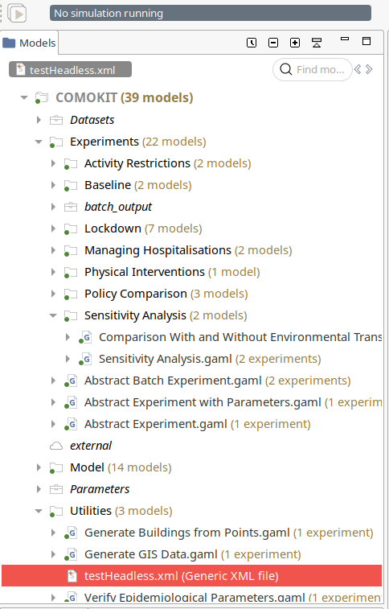

Headless execution
COMOKIT has also been made to explore his model and run in headless mode on server or HPC.
Table of contents
Introduction
COMOKIT has also been developped to be run in headless mode. To do so, it is using the GAMA Headless feature which allows to run GAMA on a server without graphical interfaces.
To simplify this usage, we developped some tools allowing this configuration.
Getting started
Before installation
Before installing COMOKIT, be sure to have on your server:
- 64 bits server
$ lscpu | head -n 2 Architecture: x86_64 CPU op-mode(s): 32-bit, 64-bit - Python 3
$ python3 -V Python 3.8.2 - pip3
$ pip3 -V pip 20.1.1 from /home/roiarthurb/.local/lib/python3.8/site-packages/pip (python 3.8) - (if you do not use GAMA with JDK) JDK 8
$ java -version openjdk version "1.8.0_242" OpenJDK Runtime Environment (build 1.8.0_242-b08) OpenJDK 64-Bit Server VM (build 25.242-b08, mixed mode)
Installation
To install COMOKIT Headless on your server you can either download a COMOKIT release and the headless tools or directly download the HPC archive (which packages GAMA with an embedeed JDK, COMOKIT for Linux and the needed tools).
If you don’t use a version of GAMA provided with one of our release, be sure to use GAMA 1.8.1 version (or above) and a JAVA Developpement Kit (JDK) 8.
Setting up your server
To have your tooly-scripts ready to run, be sure to install all the required python’s modules like so
$ pip3 install -r /path/to/COMOKIT-HPC/pre-processing/required.txt
How to use:
Generate XML
GAMA Headless mode needs an XML configuration file in order to run GAMA. The HPC toolkit allows to generate it automatically.
- move to the folder pre-processing
$ cd /path-to/COMOKIT-HPC/pre-processing - run
generateMultipleXML.pywith arguments to create the XML file and run GAMA. Basic usage is described below.
$ python3 generateMultipleXML.py -h
usage: $ python3 generateMultipleXML.py [options] -f INT -xml <experiment name> /path/to/file.gaml /path/to/file.xml
optional arguments:
-h, --help show this help message and exit
-r INT, --replication INT
Number of replication for each paramater space (default: 1)
-s INT, --split INT Split XML file every S replications (default: 1)
-o STR, --output STR Relative path from GAML file to folder where save output CSV (default:
"../../batch_output" => /path/to/COMOKIT-Model/COMOKIT/batch_output)
-u STR, --until STR Stop condition for the simulations (default: "world.sim_stop()"
-S INT, --seed INT Starting value for seeding simulation (default: 0)
-f INT, --final INT Final step for simulations
-xml <experiment name> /path/to/file.gaml /path/to/file.xml
Classical xml arguments
Example usage
COMOKIT provide you an XML example to launch the headless.

It has been generated with the command below
$ cd /path/to/COMOKIT-Model/COMOKIT/Utilities
$ python3 ~/path/to/COMOKIT-HPC/pre-processing/generateMultipleXML.py -xml "SensitivityHeadless" ../Experiments/Sensitivity\ Analysis/Sensitivity\ Analysis.gaml ./testHeadless.xml -f 20
Total number of parameters detected : 0
Total number of possible combinaison : 1
Replications : 1
Number of exp in file : -1
Final step : 20
=== Start generating XML file :
(every dot will be a simulation with all the replications created)
.
=== Start saving XML file
=== Done ;)
In the command above, we said that we want to generate an XML file with the experiment SensitivityHeadless from the file Experiments/Sensitivity Analysis/Sensitivity Analysis.gaml and save it at ./testHeadless.xml. We also precised that the simulation should stop after 20 steps (if not stopped before).
This command is the smallest command possible, but we can go way deeper in the customization as we will see after.
The generated XML looks like this :
<Experiment_plan>
<Simulation experiment="SensitivityHeadless" finalStep="20" id="0" seed="0" sourcePath="../Experiments/Sensitivity Analysis/Sensitivity Analysis.gaml" until="world.sim_stop()">
<Parameters>
<Parameter type="INT" value="0" var="idSimulation"/>
<Parameter type="STRING" value="../batch_output/" var="result_folder"/>
</Parameters>
<Outputs/>
</Simulation>
</Experiment_plan>
Advanced usage
As you can see, our previous command only generated an Experiment Plan with a single Simulation. This example is the simpliest usage to give you a try runnable on your computer, but it doesn’t fit if you want to do a full exploration on a server.
To do so you can change the script parameters to generate a bigger exploration plan like this :
$ python3 ~/path/to/COMOKIT-HPC/pre-processing/generateMultipleXML.py \
-xml "SensitivityHeadless" ../Experiments/Sensitivity\ Analysis/Sensitivity\ Analysis.gaml ./testHeadless.xml \
-o ../results/ -r 1000 \
-s 36 -f 5000
Total number of parameters detected : 0
Total number of possible combinaison : 1
Replications : 1000
Number of exp in file : 36
Final step : 5000
=== Start generating XML file :
(every dot will be a simulation with all the replications created)
.....................................................................................................................
.....................................................................................................................
.....................................................................................................................
.....................................................................................................................
.....................................................................................................................
.....................................................................................................................
.....................................................................................................................
.....................................................................................................................
................................................................
=== Start saving XML file
=== Done ;)
$ # Check generated XML files
$ ls -l *.xml | wc -l
29
$ ls -lh *.xml | head
-rw-r--r-- 1 roiarthurb roiarthurb 15K 26 mai 10:31 testHeadless-0.xml
-rw-r--r-- 1 roiarthurb roiarthurb 16K 26 mai 10:31 testHeadless-10.xml
-rw-r--r-- 1 roiarthurb roiarthurb 16K 26 mai 10:31 testHeadless-11.xml
-rw-r--r-- 1 roiarthurb roiarthurb 16K 26 mai 10:31 testHeadless-12.xml
-rw-r--r-- 1 roiarthurb roiarthurb 16K 26 mai 10:31 testHeadless-13.xml
-rw-r--r-- 1 roiarthurb roiarthurb 16K 26 mai 10:31 testHeadless-14.xml
-rw-r--r-- 1 roiarthurb roiarthurb 16K 26 mai 10:31 testHeadless-15.xml
So, with this advances command we created an Experiment Plan with 1000 simulations (1 combinaison times 1000 replications, done with the argument -r) splited in several files so every file contain 36 Simulation (-s).
Note that if you split your XML file, it will automatically change the name to have a unique id on every file.
Launch headless
Once you have your XML files, you’re ready to launch the GAMA headless with a simple command :
$ bash /path/to/GAMA/headless/gama-headless.sh ./testHeadless-0.xml ./output
The 2 script’s parameter (
./output) is never use within COMOKIT but is requested by the GAMA Headless, so don’t mind about this folder content. All the CSV raw data are saved in the location precised while you’ve been creating your XML files.
If you need more explainations about the headless, please refer to the official GAMA documentation.